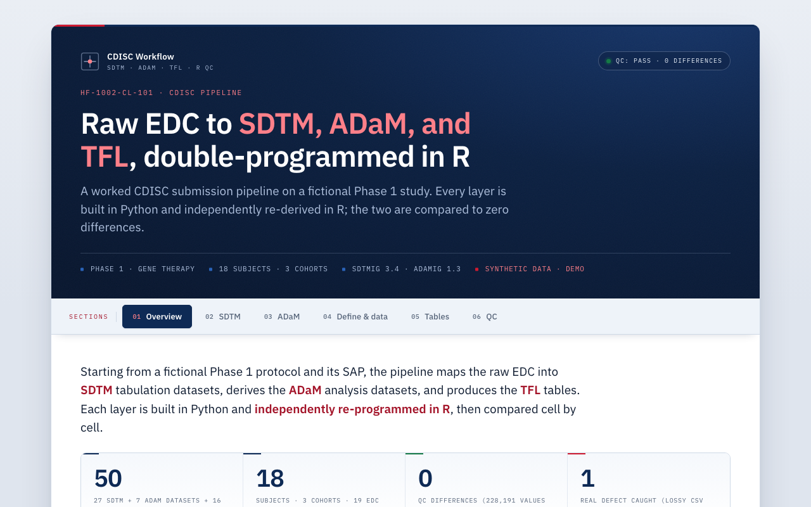

CDISC Submission Pipeline
Raw EDC → SDTM → ADaM → TFL for a fictional Phase 1 heart-failure study, with every layer independently double-programmed in R and QC'd to zero differences.
Launch live demo
Runs in your browser
What it does
Transforms raw EDC extracts through the standard clinical submission layers and produces define.xml, specs, and a coding dictionary at each stage.
How it works
- Python builds SDTM, ADaM, and 16 TFL tables from the raw EDC.
- An independent R re-implementation re-derives every output and compares it (diffdf for datasets, cell-by-cell for tables).
- The QC target is always zero differences; a negative-control mode proves the QC catches injected errors.
PythonR
CDISCdefine.xmlDouble programming

Static preview - click to open the live, interactive demo